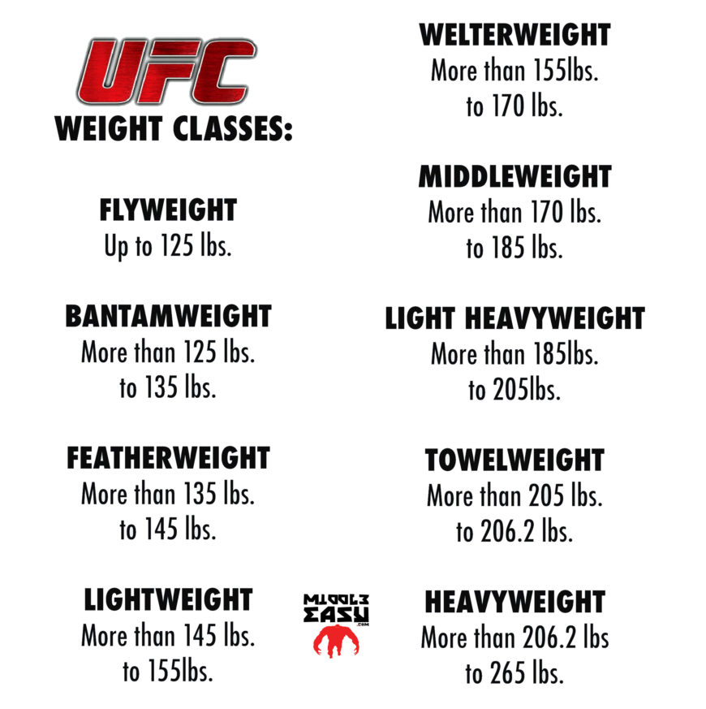

Dywizje UFC
UFC posiada kilka kategorii wagowych, aby zapewnić równowagę między zawodnikami. Każda z dywizji ma swoje limity wagowe i własnych mistrzów. Oto kilka z najpopularniejszych kategorii:
-

- Piórkowa (do 66 kg): To dywizja, w której zawodnicy są znani z szybkości i techniki. Mistrzostwo tej kategorii jest często uznawane za jedno z najbardziej prestiżowych.
- Lekka (do 70 kg): Ta kategoria jest znana z intensywnych walk i wszechstronnych zawodników, którzy potrafią zarówno walczyć w stójce, jak i w parterze.
- Średnia (do 84 kg): Zawodnicy w tej dywizji są zazwyczaj dobrze zbalansowani między siłą a techniką, co prowadzi do emocjonujących pojedynków.
- Półciężka (do 93 kg): Ta kategoria łączy zawodników o różnych stylach walki, co czyni walki w niej bardzo interesującymi.
- Ciężka (powyżej 93 kg): Zawodnicy w tej dywizji są często najsilniejsi, a ich walki przyciągają największą uwagę ze względu na ich potężne uderzenia i dramatyczne zakończenia.
Struktura dywizji
W każdej dywizji UFC zawodnicy rywalizują o tytuł mistrza, a także o rankingi, które określają ich pozycję w lidze. Wprowadzenie kategorii wagowych było kluczowe dla rozwoju MMA, ponieważ pozwoliło na stworzenie bardziej zrównoważonych pojedynków, w których zawodnicy mają podobne warunki fizyczne.
Walka o tytuł mistrza
Mistrzowie każdej dywizji są uznawani za najlepszych zawodników w swoim ciężarze, a walki o tytuł mistrza UFC są jednymi z najbardziej wyczekiwanych wydarzeń w kalendarzu MMA. Zawodnicy muszą przejść przez system rankingowy, aby zdobyć szansę na walkę o pas, a rywalizacje często są nazywane "walką o tytuł" w związku z ich dużą wagą w świecie sportu.
Przykłady znanych mistrzów
Choć nie będziemy wymieniać konkretnych zawodników, warto wspomnieć, że w każdej z dywizji UFC pojawiło się wielu znakomitych mistrzów, którzy na zawsze zapisali się w historii sportu dzięki swoim osiągnięciom i niesamowitym występom w oktagonie.